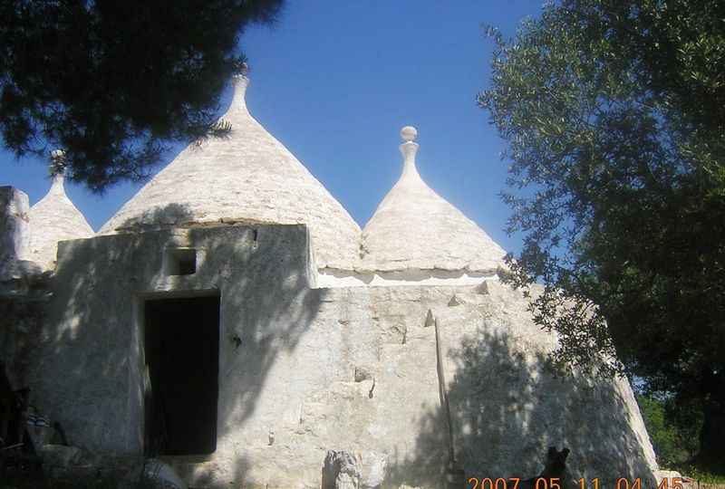

Double bedroom
Double bed under the vaulted ceiling, a large wardrobe and bedside tables. A simple, bright room.
Our trullo in the countryside of Ostuni, a few minutes from the sea and the White City. A simple welcome, and the pleasure of sharing our Puglia with you.
Rocca Santa is our family trullo, in the countryside of Ostuni. We restored it respecting what it was: stone, conical vaults, local materials.
A place to feel at ease, away from the noise.


Two bedrooms, a living room with sofa bed, the kitchen and two bathrooms. Tap a photo to see more.
Double bed under the vaulted ceiling, a large wardrobe and bedside tables. A simple, bright room.
Two single beds in the stone alcoves of the trullo, with stone walls and small niches. Ideal for children or friends.
Dining table and fireplace. In the alcove, a sofa bed for two more guests.
With shower and window. Towels included.
Gas hob, fridge, microwave and coffee machine. Pots, pans and dishes for everyone.
A second full bathroom with shower, separate from the house. Handy when there are many of you.
Traditional Apulian building with conical vaults, dry-stone limestone walls and interiors finished with care, respecting local materials.
Private outdoor space among the olive trees, with an outdoor dining area.
Full kitchen with fridge, hob and everything you need to cook.
Wi-Fi and linen included. Everything essential for a comfortable stay.
Private parking inside the property. Useful, since a car is almost essential to explore the area.
10 minutes from Ostuni's old town, 45 minutes from Brindisi airport. 20 minutes from the nearest beaches on the Adriatic coast.
Stone, olive trees and countryside.Ostuni · Valle d'Itria
A family trullo, to live in like a home.
This is how the trulli looked in 2007, before the works: whitewash, dry-stone walls, the family in the garden.
Write to us for availability and rates.
 Location
Location
10 minutes from Ostuni's old town, 45 minutes from Brindisi airport.
20 minutes from the nearest beaches on the Adriatic coast.
The exact location will be shared once the booking is confirmed.